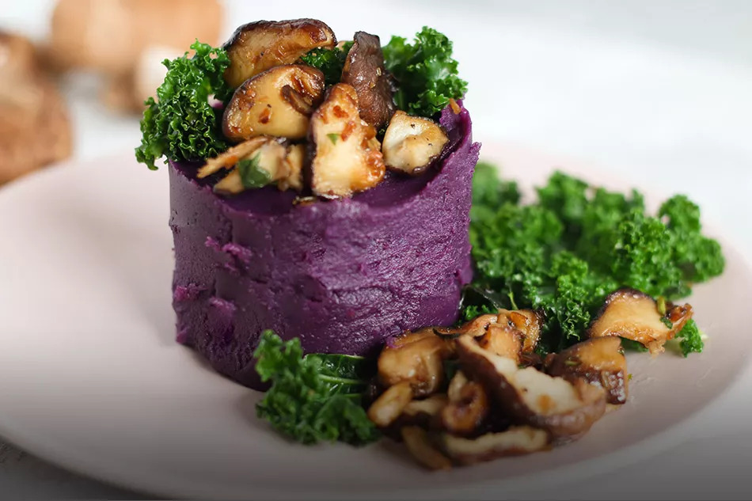
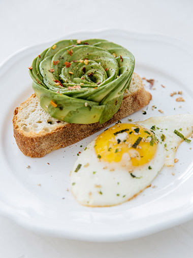
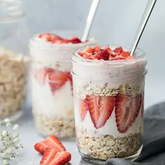

Hakkımızda
Yaygınlaşmış küresel gıda anlayışına göre hamburger; belirli fast food zincirlerinin yapım süreçleri ve kullandıkları malzemeler nedeniyle "sağlıksızdır ve kilo aldırır" gibi negatif bir imaja sahip. Bu nedenle son 10 yılı domine eden sağlıklı yaşam trendleri dışında bırakılmıştır. "Hamburgersiz de yaşanır ", iddialıyız. Fool El Blog, bugüne kadar yediğiniz tüm burgerleri size unutturacak kadar eşsiz yaratıldı.
Yemekler

Bir fırında mantar soslu antrikot Türk mutfağının en özel ve en gösterişli yemeklerinden biri olarak kabul edilir.
Bu yemek için dana antrikot özel baharatlarla fırına verilir ve ağızda dağılacak kadar yumuşayarak benzersiz bir deneyim için hazır hale gelir. Yanında sebze sote, mantarlı özel sos ile bu harika şölen tamamlanır.
Aperatif

Anadolu lezzetlerinden Avrupa'ya varana kadar bir yemek skalasını sizlerle paylaşmak için yola çıktık. İnternet gibi güçlü bir bağ ile mutfaklarınıza misafir olmak niyetindeyiz. E hadi o zaman, müsaitseniz kahvaltıya, belki akşam yemeğine, bilemedin 5 çayına sizdeyiz.
Yine de en çok sizleri bize bekleriz. Çünkü sadece bizim mutfağımızın ocağı yanarsa biz sizin o maharetli ellerinizden çıkan lezzetlerin tarifini nereden biliriz. İşte bu yüzden, hadi yine gelin; bizim mutfağın kapısı yok, hep bekleriz.
Tatlılar

tatlılarımız, fırınımız ustalarının özenle hazırladığı pastacı kreması ile buluştu. Her sofraya yakışan alametifarikalarımız tatlılarımız ile kendinizi ödüllendirin.